Explore Nice
A Brief History
Nice passed from Savoyard rule to France in 1860, preserving Italianate old-town lanes beneath Belle Époque façades along the Baie des Anges. English and Russian aristocrats wintered here from the 19th century, funding promenades, churches, and gardens. The city remains the commercial centre of the French Riviera while mountain villages above supply olive oil and perfumery.
Attractions Map
Top Sights & Activities
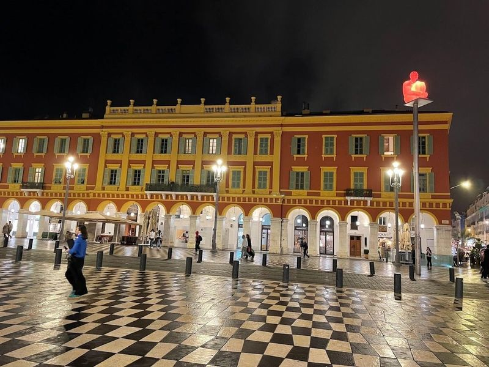
Place Masséna
Place Masséna is a charming and historic 19th-century plaza located in the heart of Nice. It is surrounded by neoclassical buildings, cafes, and upscale shops, making it a bustling city square with plenty to offer. The square hosts various public events and is connected to the pedestrian zone, providing easy access to the Old Town and seafront.
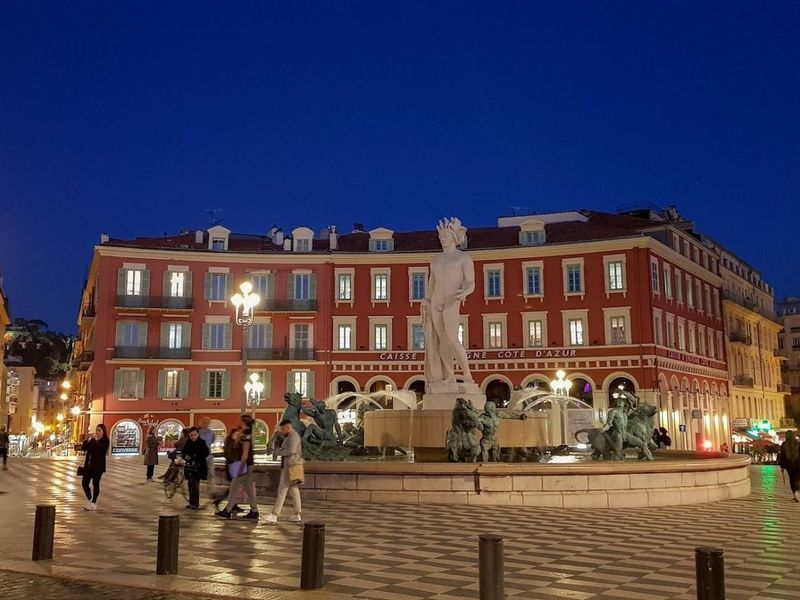
Fontaine du Soleil
Nestled in the vibrant heart of Place Massena, Fontaine du Soleil is a bronze sculpture that pays homage to Apollo, the Greek god of the sun. This landmark has been a source of local humor and stories since the 1950s. As you stroll down Avenue Medecin towards this magnificent fountain, be captivated by its grandeur and the colorful surroundings.
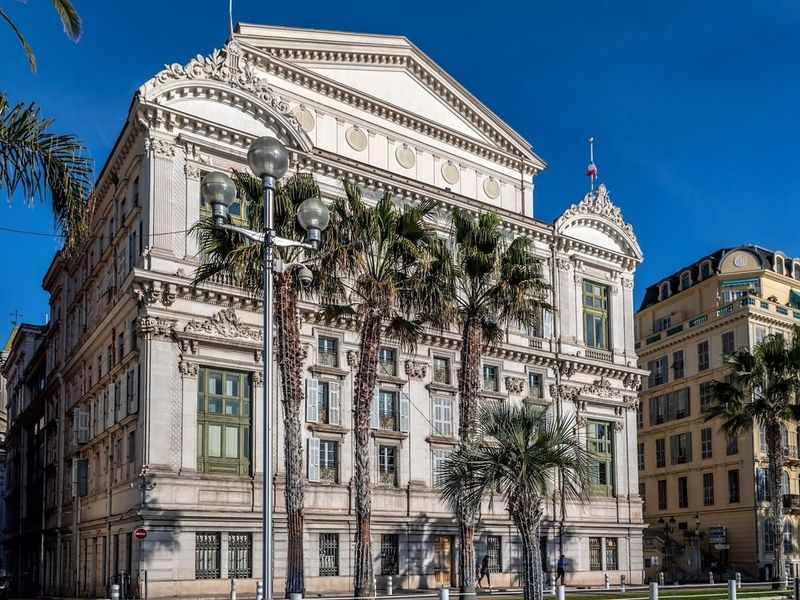
Opéra de Nice
The Opéra de Nice, originally a small wooden theater built in 1776, has evolved into a renowned institution hosting grand opera, ballet, and music performances. After being purchased by the city of Nice and redesigned in classical Italian style by architect Benoit Brunat, it has become the main venue for operas, classical concerts, and ballet performances in the city.
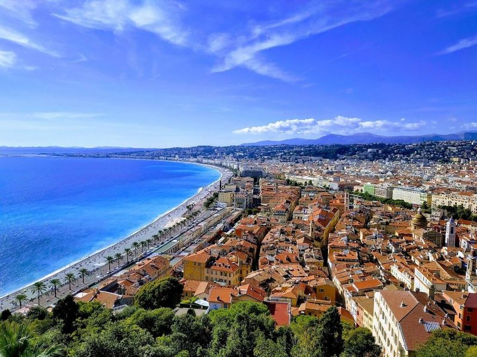
Colline du Château
Colline du Château, also known as Castle Hill, is a historic hilltop park in Nice that offers views of the city and the sea. The climb up the stone steps to this hill is short but rewarding, with turquoise coasts and apricot-colored roofs spreading out before you as you ascend. From the summit, enjoy grand vistas of the Old Port with its yachts and sails, as well as distant views of the snow-dusted peaks of the Alps.
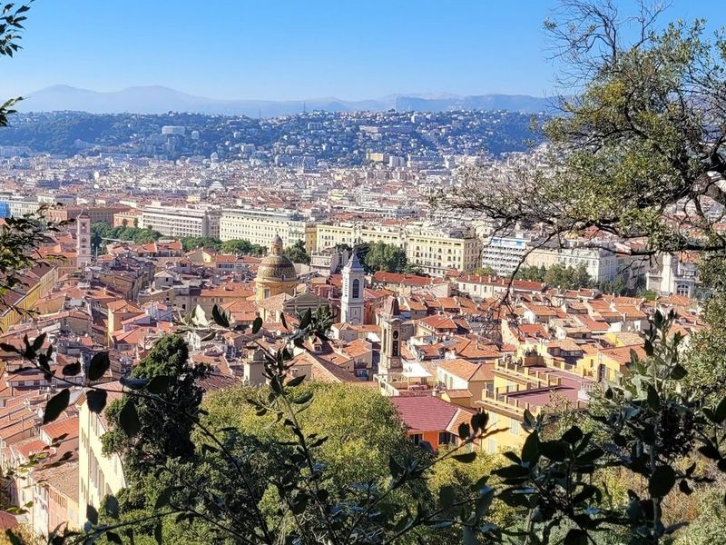
Point de vue Colline du Château
Point de vue Colline du chateau, located on a hill in Nice, offers panoramic views of the city and the Bay of Angels. The castle itself was destroyed in 1706, but its park has become a popular meeting place for both tourists and locals. Visitors can enjoy a serene atmosphere under the shade of umbrella pines during summer months while listening to the rhythmic soundtrack provided by cicadas.
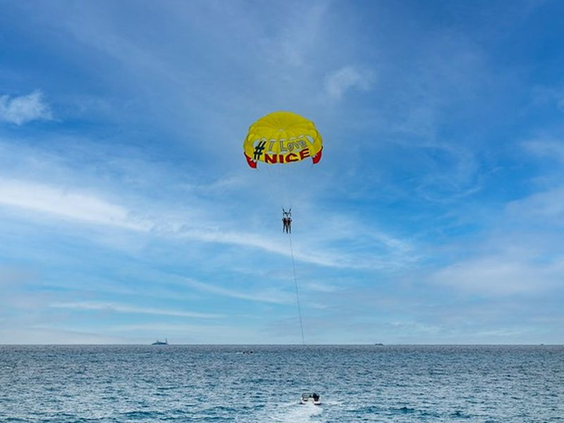
#ILoveNICE
The #ILoveNICE installation on Colline du Chateau is a photogenic landmark above the old town, popular with visitors posing against the Bay of Angels backdrop. The viewpoint lies within the castle hill park reached by steps or elevator from the waterfront, linking the Promenade des Anglais to panoramic terraces.
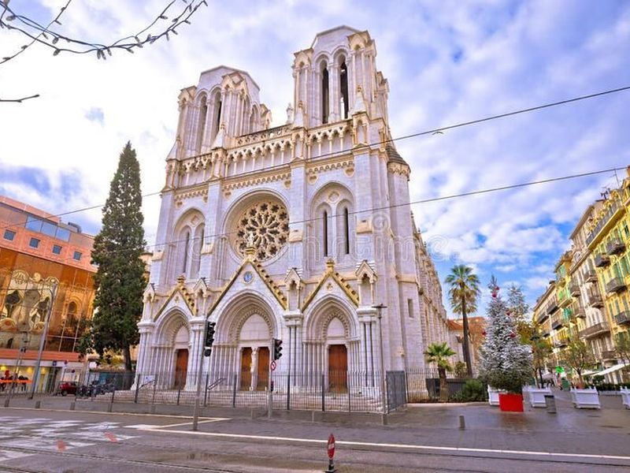
Basilique Notre-Dame de l'Assomption
Basilique Notre-Dame de l’Assomption, also known as Notre Dame de Nice, is a grand neo-Gothic church with imposing twin towers and vibrant stained glass. Located at the end of Saint-Jean-Medecin, it resembles a white-washed version of the famous Notre Dame in Paris. Despite its striking similarity to the Parisian landmark, this basilica was actually modeled after a monastery in Angers, France.
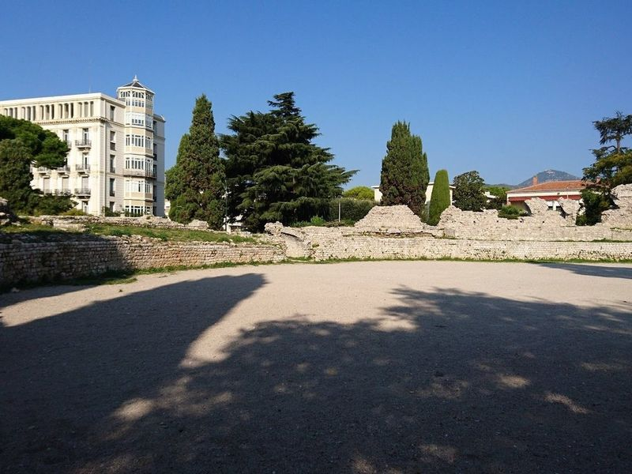
Jardin des Arènes de Cimiez
Garden of Arenas Cimiez is a historic site in the neighborhood of Cimiez, Nice, featuring ruins of a Roman amphitheater that once accommodated up to 5,000 spectators. The area also includes the remains of an old Roman settlement called Cemenelum, comprising an arena, thermal baths, and a basilica. This place is rich in history and was favored by English Queen Victoria as well as nobles and aristocrats from France and beyond for relaxation.
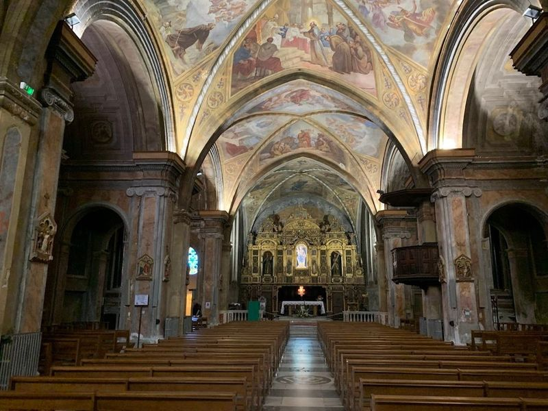
Monastère de Cimiez
Cimiez Monastery, an 800s monastery with gardens overlooking Nice, is a historical site that offers a glimpse into the Franciscan way of life. The monastery includes a church, a 17th-century chapel, and a museum showcasing the history and development of the Franciscan order. Visitors can admire paintings by the Brea brothers in the church and explore the cemetery where artists Henri Matisse and Raoul Dufy are buried.
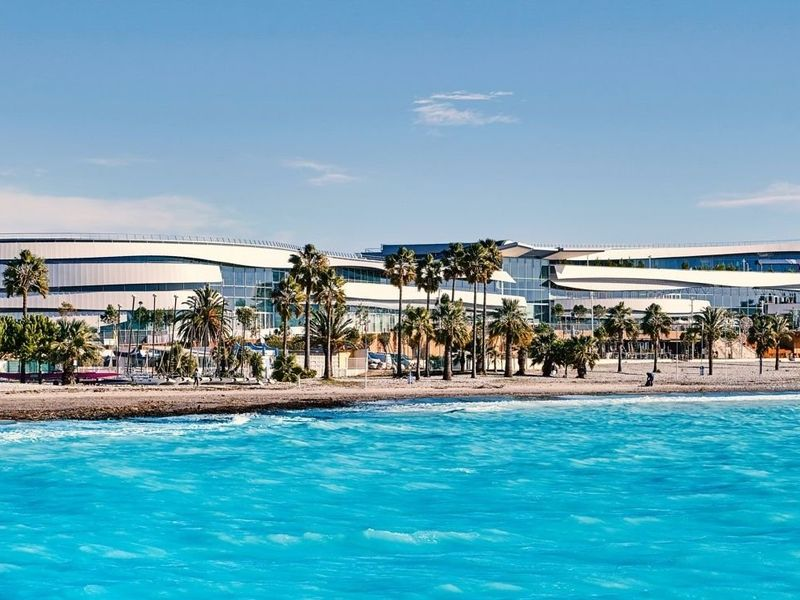
CAP3000 - Shopping Mall
CAP3000 is a modern and expansive shopping mall in Nice, offering a wide range of popular chain retailers for various goods and numerous dining options. The mall provides an immersive shopping experience with its well-designed layout and vast array of products, including fresh produce, household essentials, electronics, and fashion. Additionally, CAP3000 hosts entertaining activities for visitors of all ages during the Toussaint 2023 holidays.
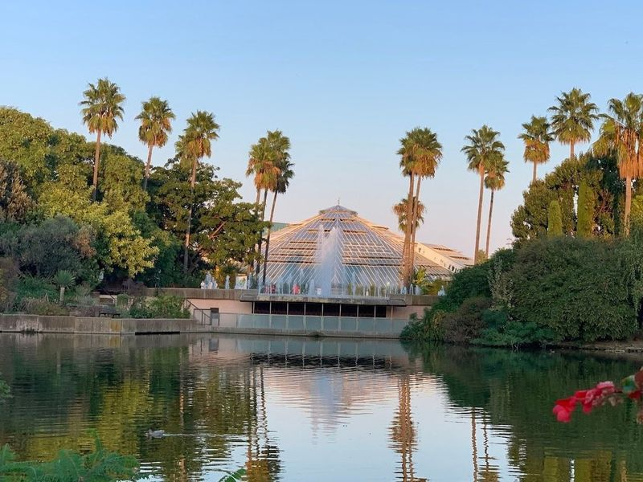
Parc Phœnix
Parc Phœnix, located in Nice, France, is a botanical garden and zoo that boasts a massive tropical glasshouse, aviaries, and habitats for various animals like otters and wallabies. The park features an expansive indoor arboretum filled with exotic orchids, wild palms, diverse habitats, and surprising species of flora and fauna. Visitors can make use of the botanical audio guide e-beacon through a free app available for download at the entrance's free wifi zone.
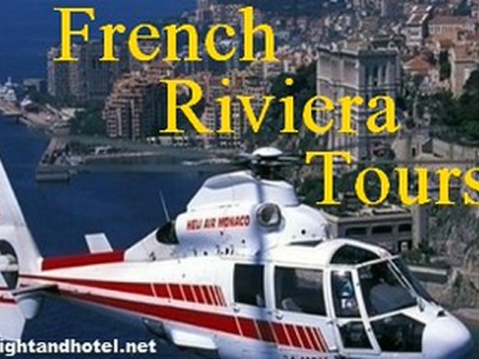
French Riviera Sightseeing
French Riviera Sightseeing operates coach and minibus tours from Nice to coastal towns such as Monaco, Eze, and Cannes. Departures typically start near the port and seafront hotels, offering guided commentary on Belle Epoque architecture and Mediterranean viewpoints along the Corniche roads.
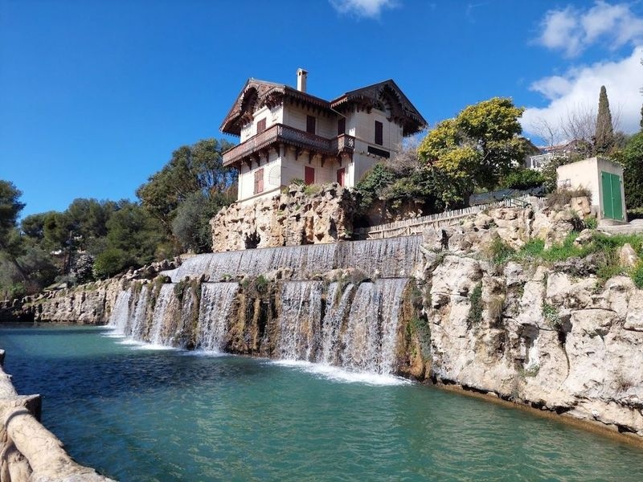
Cascade de Gairaut
Cascade de Gairaut is a charming man-made site located in the far north of Nice, France. The picturesque waterfall, rock grottoes, and Swiss-style chalet were all constructed in the late 19th century and are listed as historic monuments. Ducks have made this place their home, adding to its bucolic charm. Visitors can enjoy a tranquil escape from city life amidst the cascading waterfalls and lush hills.
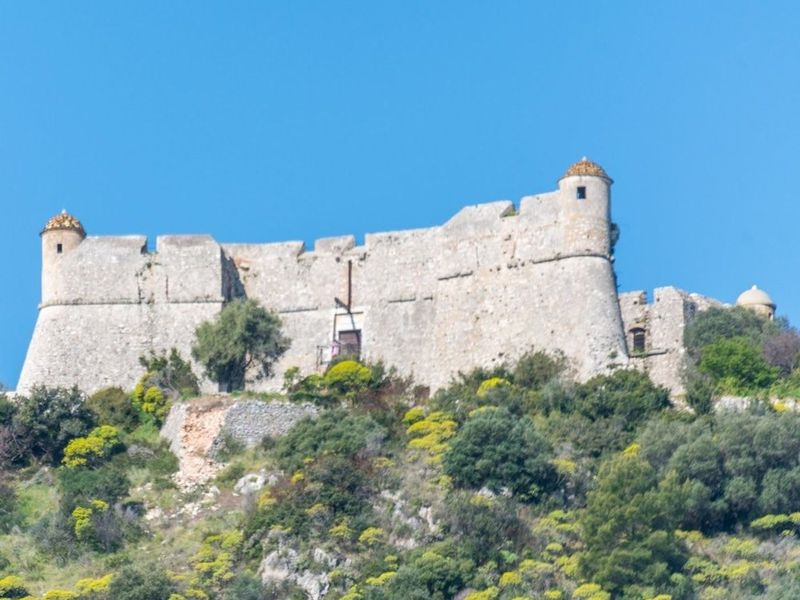
Fort du Mont Alban
Perched high above the French Riviera, Fort du Mont Alban is a remarkable 16th-century military stronghold that has stood the test of time since its construction in 1557. Nestled within the picturesque Mont Boron National Park, this well-preserved fortification offers views stretching from Nice to Villefranche-sur-Mer and beyond to Italy.
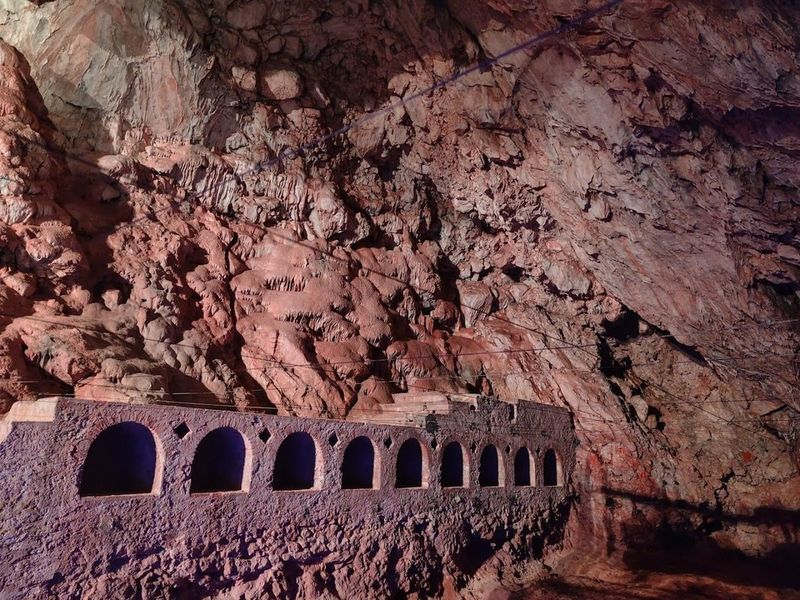
Grotte du Lazaret
Located at the foot of Mont Boron, Grotte du Lazaret is a 35-meter-long and 14-foot-wide cave that provides insight into the lives of pre-Neanderthal inhabitants. Archaeologists have discovered over 20,000 bone fragments from both humans and ancient animals within the cave, dating back to around 130,000 BC. This seaside cave offers raised walkways and self-guided tours for visitors interested in prehistory.
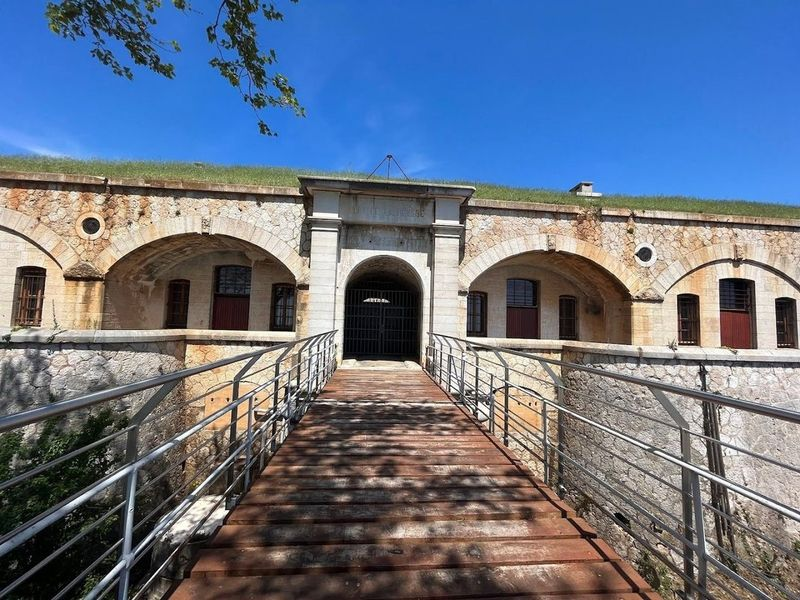
Fort de la Revère
Fort de la Revere, located in Eze, is a historical gem offering panoramic views of the Mediterranean Sea and the city of Nice. Built in 1878 to protect the region, this hidden fortress is a favorite picnic spot for locals. Although not accessible to visitors, still admire its medieval features such as limestone walls and cells by walking around it.
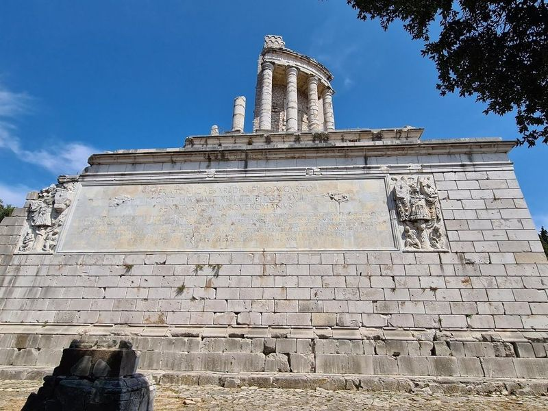
Trophy of Augustus
The Trophy of Augustus, also known as the Trophy of the Alps, is a Roman-era monument located in La Turbie. Built around 6BC by Emperor Augustus to commemorate his victory over 45 Ligurian tribes, it offers panoramic views and a glimpse into ancient history. The monument was constructed to celebrate the emperor's triumph over rebellious tribes that obstructed trade routes through the mountains.
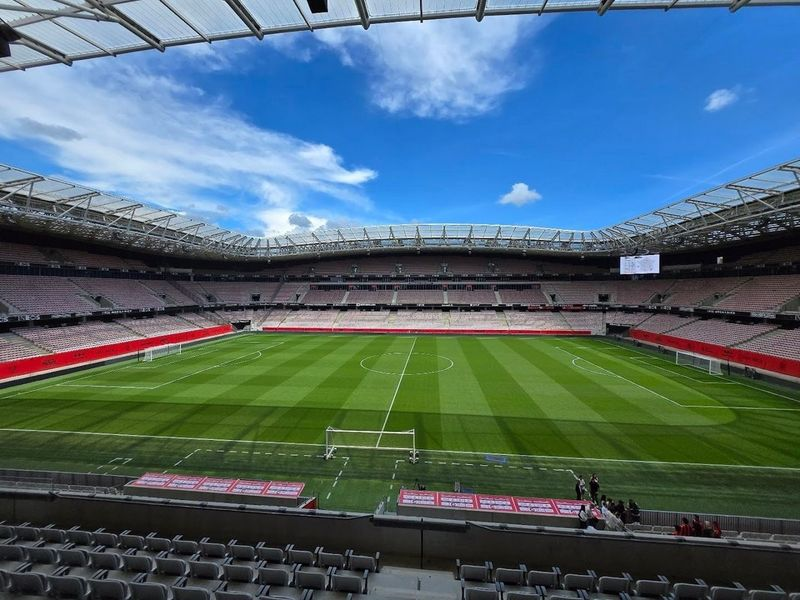
Allianz Riviera
Allianz Riviera, opened in 2013, is the home stadium of OGC Nice and was also a venue for the 2016 UEFA European Championship. It hosts various sporting events like rugby, concerts, and cultural events. The stadium offers an exciting atmosphere for live matches and is easily accessible via tram from Nice city center. While it may have limited food and beverage options inside, there are plenty of choices outside the stadium.
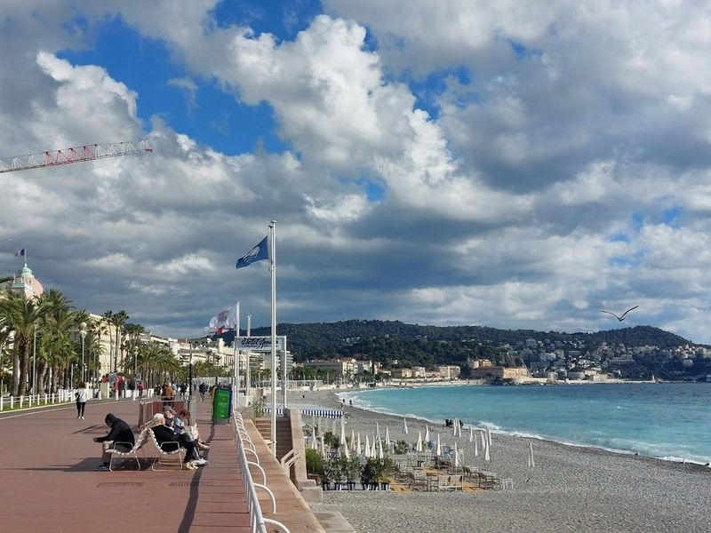
Prom. des Anglais
Prom. des Anglais is a 7-km-long beachfront promenade in Nice, France, lined with palm trees and featuring a bike path. It has been a popular spot since the 18th century when English aristocrats sought refuge from winter weather. The promenade extends from the airport to Nice's old town and is home to many hotels and cafes. Visitors can enjoy seaside walks, known locally as 'the Prom,' while taking in the sea air and lively atmosphere of Nice.
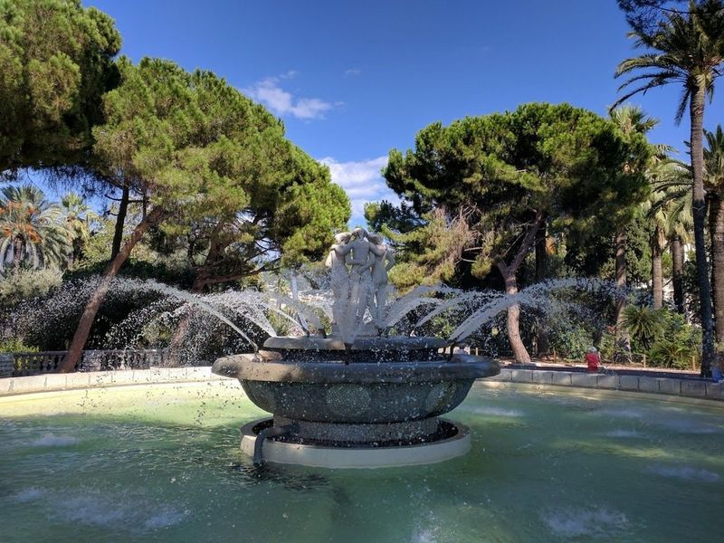
Jardin Albert 1er
Jardin Albert 1er is a charming 19th-century public park located between Place Massena and the Promenade des Anglais in Nice, France. This peaceful garden features mature trees, lush lawns, serene pools, and a bandstand. It also hosts special events such as the Nice Jazz Festival and offers an open-air theater for summer performances. At its center stands the Arc de Venet, a striking metal sculpture designed by French artist Bernar Venet.
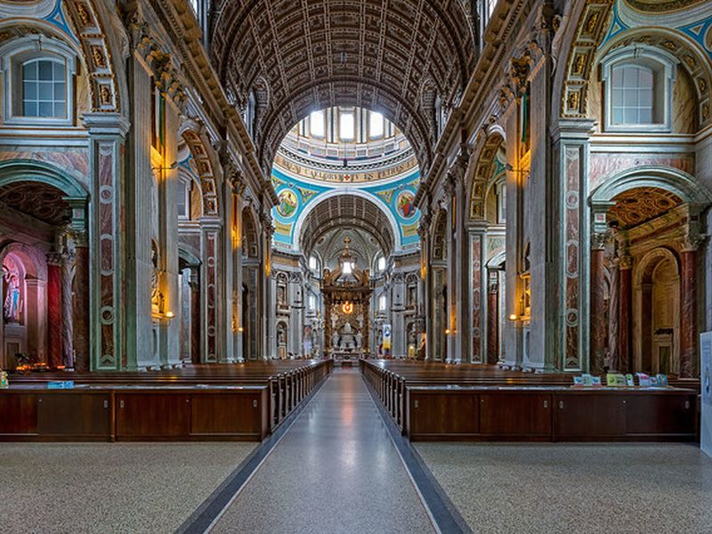
Place Giuseppe Garibaldi
Place Giuseppe Garibaldi is a historic square featuring elegant architecture, outdoor cafes, and a statue of Garibaldi, a key figure in Italian unification. The site forms part of Place Giuseppe Garibaldi's documented civic and cultural landscape within Nice, with archives and visitor information available from municipal or regional heritage authorities.
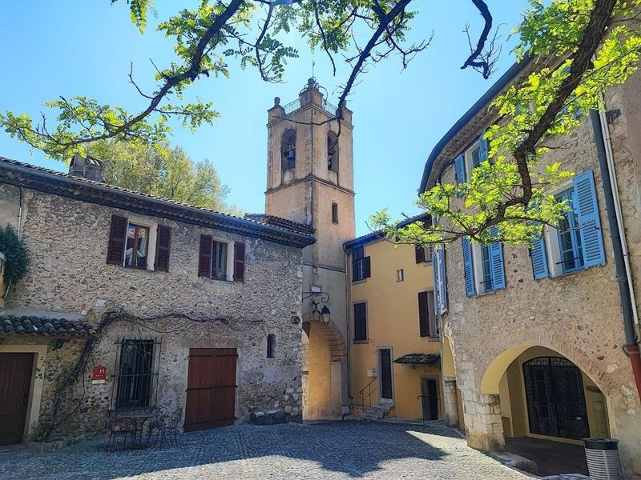
Haut de Cagnes place De Gaulle
Haut de Cagnes is an authentic old French village that sees relatively few tourists, making it a hidden gem worth exploring. The 14th-century Chateau Grimaldi, home to the Musee de l'Olivier and an annual international art festival, dominates the area with its ramparts. The narrow cobblestone streets are lined with boutiques and restaurants, while the main square is popular for boules playing.